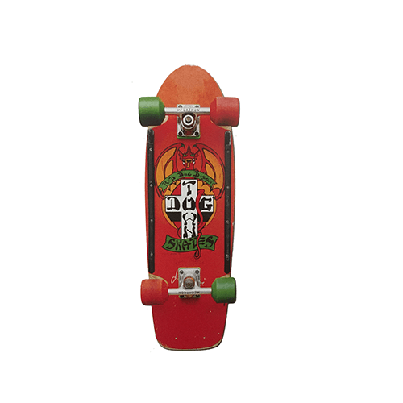
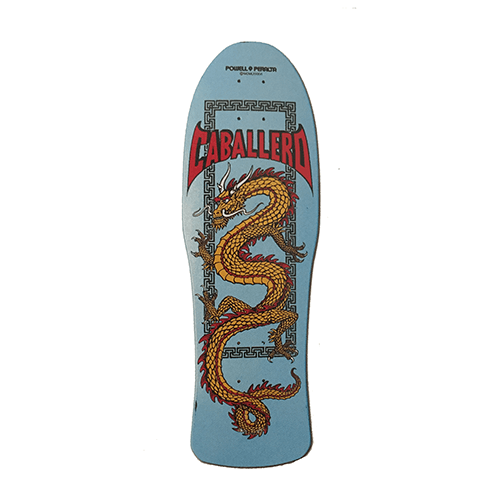
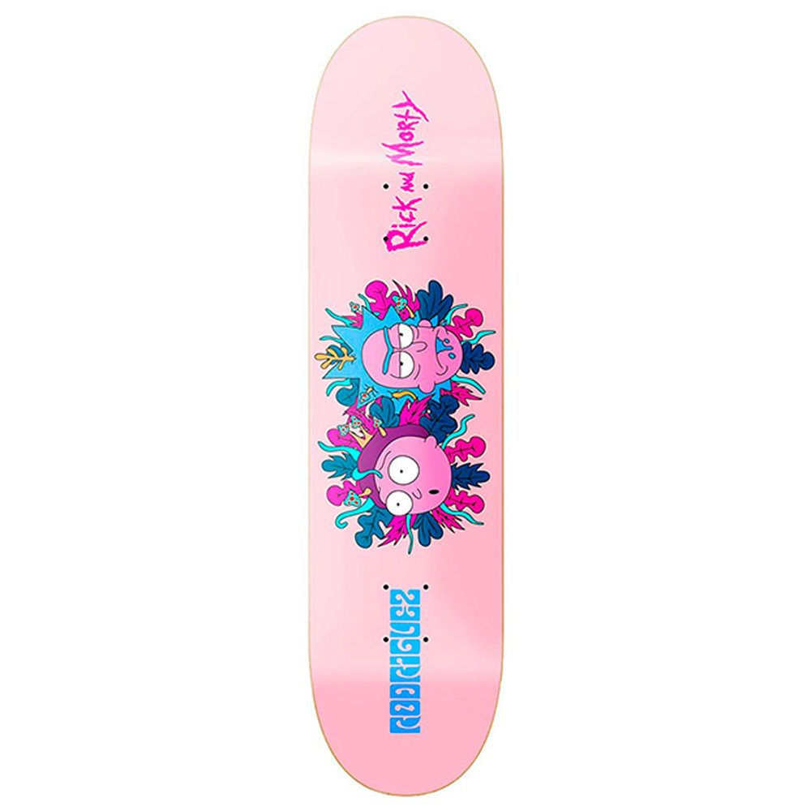

- skate en los 60
-

- decada de los 70
- 
- años 80 y 90
- 
- en la actualidad
- 
Los primeros skaters surgieron a finales de 1940 por surfistas de California que durante los días
sin olas se dieron cuenta que no tenían la opción de practicar su deporte favorito.
Nadie sabe a
ciencia cierta quién creo la primera tabla puesto que varios surfistas tuvieron ideas similares al
mismo tiempo.
Los primeros monopatines fabricados fueron realizados por una tienda de surf de Los
Ángeles, California y eran más similares a una tabla de surf con ruedas de patines. La idea era que
los surfistas tuvieran algo con lo que entretenerse durante el tiempo de inactividad.
Es por esto por
lo que al principio se consideraba el skate como practicar surf en la calle y los primeros skaters
tenían una técnica mas surfera que actualmente.
En la década de los 60 pequeños fabricantes de tablas de surf del sur de California comenzaron a construir tablas de skate de manera más profesional. Se comenzaron a montar equipos para patrocinar el deporte. Además un pequeño programa de la televisión norteamericana llamado "Surf's Up" ayudó a promover el skate como algo nuevo, fresco y divertido que hacer entre la gente joven.